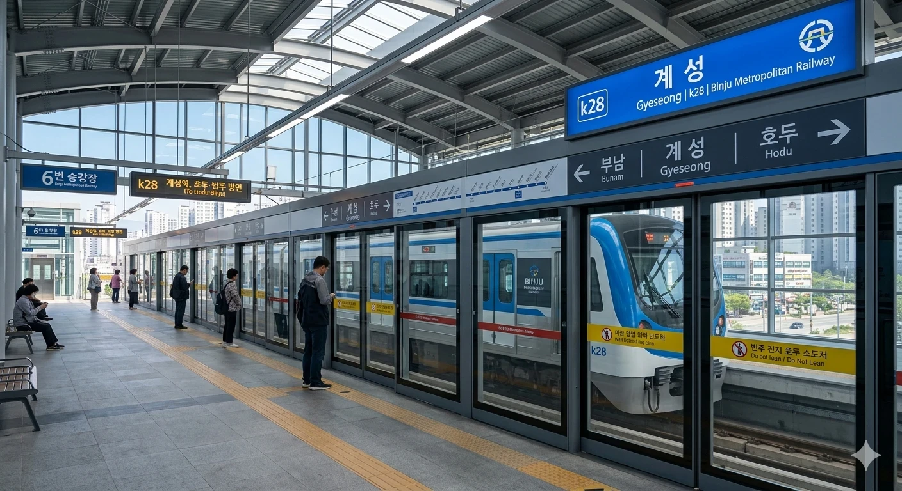

빈효선 및 빈효고속선의 철도역이자 빈주권 광역전철의 정차역. 덕빈북도 계성시 계성동 소재.
덕빈광역시와 빈주시 사이의 주요 도시인 **계성시의 중심 역**이다. 빈효고속선 KTX 열차의 약 50%가 정차하며, ITX-새마을, ITX-마음, 무궁화호 등 모든 일반열차가 필수로 정차하는 교통의 요충지이다. 또한 빈주권 광역전철(k28)이 운행되어 인접 도시와의 접근성이 뛰어나다.
역사는 계성시청 및 종합터미널과 인접해 있어 계성시 교통과 행정의 중심지 역할을 한다. 역 주변으로 대규모 아파트 단지와 상업 지구가 형성되어 있어 유동 인구가 많다.
역 광장은 '계성광장'으로 불리며 시민들의 만남의 장소나 문화 행사 공간으로 활용된다. 최근 빈주권 광역전철 개통으로 인해 역사 내부 리모델링과 환승 편의 시설 확충이 이루어졌다.

3면 7선의 혼합식 승강장 구조를 갖추고 있다. 고속열차와 일반열차, 광역전철이 선로를 공유하거나 별도의 승강장을 사용한다.
| 번호 | 노선 및 등급 | 행선지 |
|---|---|---|
| 1 · 2 | 빈효선 (일반열차 상행) | 부진·천주·안천·효빈 방면 |
| 3 · 4 | 빈효고속선 (KTX) | 서울·용산·수서 / 빈주·서해 방면 |
| 5 | 빈효선 (일반열차 하행) | 천조·빈주·서해 방면 |
| 6 · 7 | 빈주권 광역전철 | 부남·호두·빈주 방면 |
| 연도 | KTX | 일반열차 | 광역전철 | 총합 | 비고 |
|---|---|---|---|---|---|
| 2017년 | 3,200명 | 3,800명 | 9,850명 | 17,850명 | 광역전철 개통 |
| 2018년 | 3,400명 | 4,000명 | 9,920명 | 18,320명 | |
| 2019년 | 3,600명 | 4,200명 | 10,050명 | 18,850명 | |
| 2020년 | 3,800명 | 4,500명 | 10,150명 | 20,450명 | 코로나19 |
| 2021년 | 4,100명 | 4,800명 | 10,300명 | 20,200명 | |
| 2022년 | 5,200명 | 5,500명 | 10,500명 | 22,200명 | |
| 2023년 | 6,500명 | 5,100명 | 11,650명 | 24,250명 | |
| 2024년 | 7,800명 | 5,500명 | 11,733명 | 26,033명 |